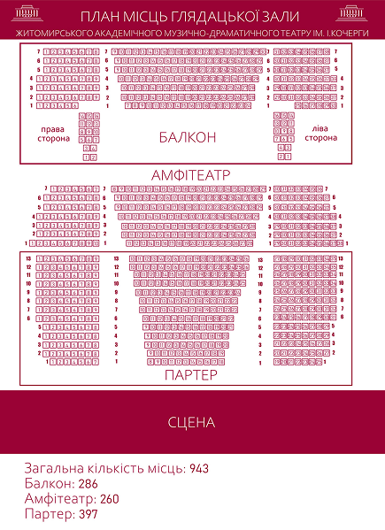
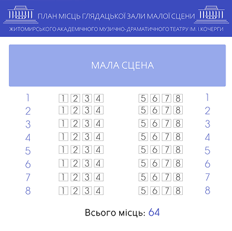

ТЕХНІЧНІ ХАРАКТЕРИСТИКИ
Загальна кількість місць залу 943 місця:
- партер – 397 місць - амфітеатр – 260 місць - балкон – 286 місць
СЦЕНА:
- дзеркало сцени (архітектурний портал) – 14,4 м х 12 м
- оркестрова яма – радіусна – 14х 4,4 м
- поворотне коло сцени : D - 12 м
- планшет сцени : ширина – 12,8 м, глибина - 22 м
- штанкета автоматична – 24 шт.
- довжина штанкетного брусу – 16,5 м
- відстань між штанкетами по осям – 25 см
- галерея і перехідні містки з обох сторін сцени : 3-х ярусні, ширрина –1.5 м
- висота до колосників – 22 м

